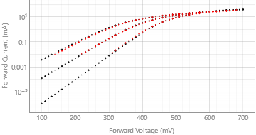
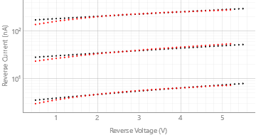
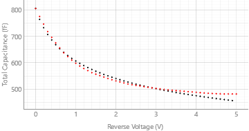

| Name | Value | Unit | Description |
|---|---|---|---|
| is | 3.820E-09 | A | Saturation current |
| n | 1.060E+00 | - | Emission coefficient |
| rs | 6.180E+00 | Ω | Ohmic resistance |
| eg | 6.900E-01 | eV | Activation energy |
| xti | 2.000E+00 | - | Saturation current temperature exponent |
| bv | 6.000E+00 | V | Reverse breakdown voltage |
| trs1 | 6.000E-03 | 1/°C | 1st order tempco for RS |
| ikf | 3.857E-01 | A | Forward knee current |
| jtun | 7.193E-09 | A | Tunneling saturation current |
| ntun | 4.150E+02 | - | Tunneling emission coefficient |
| xtitun | 9.800E+03 | - | Tunneling saturation current exponential |
| cjo | 8.050E-13 | F | Zero-bias junction bottom-wall capacitance |
| m | 2.080E-01 | - | Area junction grading coefficient |
| vj | 3.442E-01 | V | Junction potential |
| tnom | 2.700E+01 | °C | Parameter measurement temperature |


